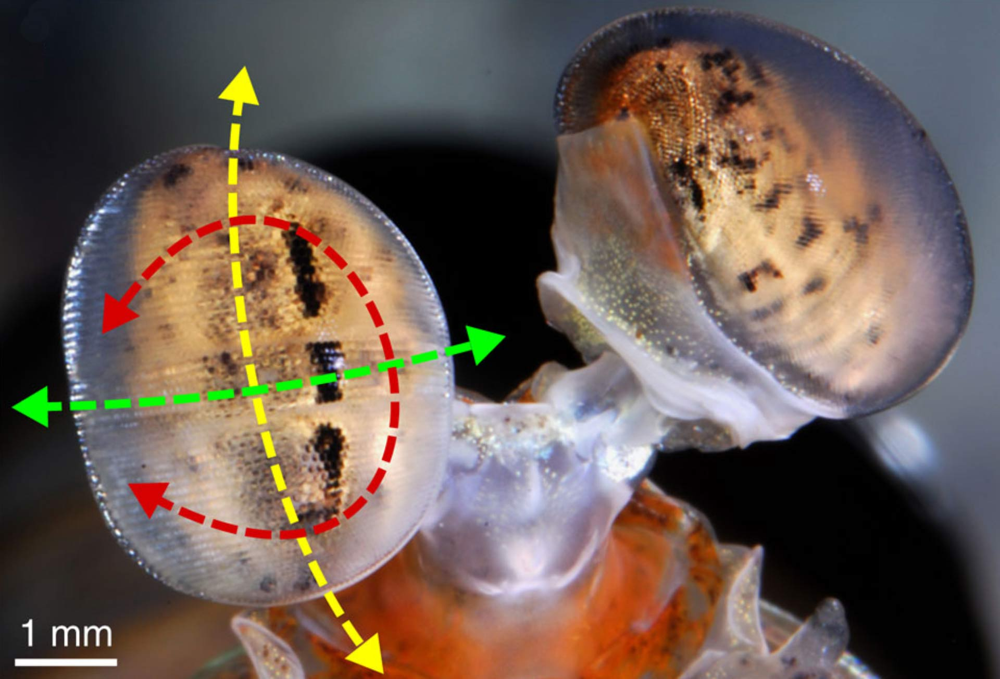

Fatos sobre o Stomatopoda.
Sobre o Stomatopoda
Stomatopoda ou estomatópode Odontodactylus scyllarus sendo seu nome ciêntifico, chamados popularmente de tamarutacas ou de lacraias-do-mar no Brasil. Os estomatópodes são predadores ativos que caçam presas com o auxílio de um sentido de visão muito apurado e capaz de interpretar polarização no espectro ultravioleta e infravermelho. Apresentam uma grande variação de tamanho, que pode ir de poucos milímetros até aproximadamente 40 cm nas espécies maiores. São animais exclusivamente carnívoros, alimentando-se de camarões, caranguejos, moluscos, peixes e até mesmo outros da mesma ordem.

| Reino: Animalia |
| Filo: Arthropoda |
| Subfilo: Crustacea |
| Classe: Malacostraca |
| Subclasse: Hoplocarida |
| Ordem: Stomatopoda Latreille, 1817 |
Fatos curiosos:
Visão Impressionante
Estes crustáceos apresentam a melhor visão em cores do mundo. Possuindo 08 fotorreceptores para distinção de cores (humanos possuem 03), conseguem detectar ondas ultravioleta e milhares de gradações (até 16 cores primárias). Com um mecanismo de polarização visual complexo e visão em 360 graus, são capazes de determinar profundidade e localização de objetos em três ângulos. Este fenômeno inspira pesquisadores para o desenvolvimento e aprimoramento de recursos fotográficos e audiovisuais como os DVDs.
Quase um boxeador!!
Excelente golpeador, o Stomatopoda "soca" suas presas com suas garras com uma força de até 2,5 mil vezes seu peso em menos de 800 microsegundos. Este nocaute equivale a um tiro de pistola calibre 22, seus membros movem tão rapidamente que a água ao seu redor borbulha, em um processo conhecido como supercavitação, quando essas bolhas de cavitação colapsam, ela produz uma onda de choque submarina que pode matar a sua presa mesmo que o Stomatopoda erre o seu alvo!